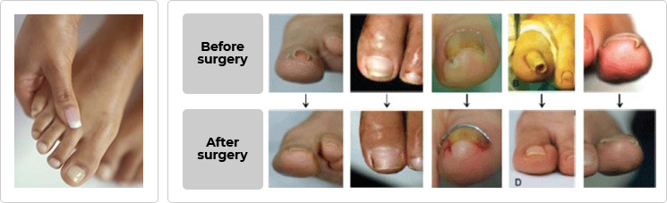

Distorted(ingrown)toenail surgery
Ingrown toenails are a common form of nail disease that usually occurson the toenail of the big toe.
The nail becomes embedded and soft under the flesh that has inflamed around it and becomes painful.

Hallux valgus treatment
- Cotton and dental floss can be put between the toenail and the flesh, if the condition is not severe.
K-D treatmentcorrectsthe deformed toenail without removing it. It helps to correct toenails quickly and to grow flesh under the toenails toward
the new-born toenails.